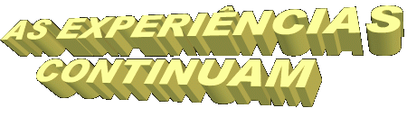
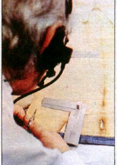
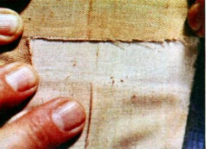
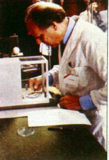
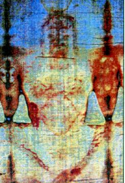
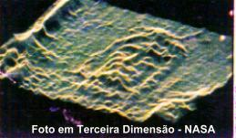

O período de 1978 a 1988,
foi de grande atividade científica. Em diversos paises reuniram-se grupos de estudiosos
entusiasmados e ansiosos, para encontrar mais informações e
conhecimentos sobre a Mortalha que envolveu CRISTO.
Entre 1978 e 1981, um grupo
de cientistas do mais alto nível, de diversos paises, reunidos no Projeto de Pesquisa
do Sudário de Turim (PPST), dedicaram quase 150 mil horas de trabalho analisando
o Lençol Mortuário. E concluíram que aquela imagem no tecido não é uma pintura,
mas uma imagem misteriosamente produzida pelo corpo que foi envolvido pelo
tecido. A Mortalha mostra uma grande quantidade de detalhes com uma precisão
simplesmente espantosa. É o caso, por exemplo, dos halos formados em torno das
manchas de sangue, decorrentes da separação da parte sólida do sangue coagulado
e do soro. Segundo os pesquisadores do projeto, as marcas do corpo no Lençol exibem
sinais indiscutíveis de morte e rigidez, mas nenhum indício de decomposição. Esta
preciosa informação também pode ser utilizada como mais uma das provas da
Ressurreição do SENHOR. Acrescentaram os especialistas, que no verso da
Mortalha, não existe qualquer impressão.
Profissionais da fabricação
têxtil confirmaram que o Lençol de Turim é uma peça inteiriça de puro linho, produzido
num tear manual e muito rústico. As técnicas de fiação e tecelagem utilizadas eram
amplamente difundidas no Oriente Médio, tendo-se encontrado diversos tecidos
similares. A celulose das fibras apresenta-se degradada. O tecido que originalmente
tinha cor branco-marfim, apresenta atualmente uma coloração amarelo palha, por
efeito da oxidação.
Além do linho usado na
confecção da Síndone, também encontraram vestígios de fibras de um tipo de algodão
do Oriente Médio, o Gossypium
herbaceum. Isso leva a crer que
o pano foi tecido num tear que foi utilizado na confecção de peças de algodão. Este
fato, sem dúvida, é mais um forte argumento a favor da origem oriental do Sudário,
pois, como lembra John Tyrer, pesquisador do Instituto Têxtil de Manchester, na
Inglaterra, durante a Idade Média o algodão não era cultivado na Europa.

Em
1983, com autorização da Igreja, foram feitas diversas experiências nos
Estados Unidos da América do Norte. Na Academia da Força Aérea em Colorado
Springs, o professor de física Dr. Erick Chamber e o professor de Engenharia
Eletrônica Dr. John Jackson, submeteram as fotos do Lençol Mortuário ao mesmo
processo de análise que foram submetidas às fotos do Planeta Marte, enviadas
pela sonda espacial. O aparelho usado no teste funciona como um “hologramaâ€,
mostrando as figuras resultantes da superposição das ondas de um feixe de
radiação coerente, com as ondas refletidas por um objeto pela ação de raios
laser, dando forma tridimensional à imagem feita apenas com luz e sombras. A
maquina colocada na nave espacial estava dotada de todos os requisitos modernos
para captar com perfeição a imagem do solo marciano, transmitindo os sinais
com a melhor e mais avançada tecnologia para a estação terrestre, que
retransmite os sinais da imagem recebida, para um monitor de televisão, onde a
superfície do planeta foi apreciada com notável nitidez em terceira dimensão.
Se no aparelho da NASA
(VP-8) for colocada uma imagem tirada com uma maquina fotográfica convencional,
a projeção na tela do monitor ficará distorcida, irreconhecível, porque as maquinas
fotográficas convencionais só registram as variações da luz num mesmo plano, ou
seja, em duas direções, considerando a altura e largura, sem levar em conta à distância
entre o objeto fotografado e a câmara, ou seja, a profundidade.
Todavia, colocando a fotografia
do Lençol Mortuário naquela mesma maquina especial (VP-8), a imagem ficou perfeita
e reconhecível. Este fato vem testemunhar que o Lençol Mortuário de Turim não foi pintado,
que as imagens foram decalcadas no linho de modo misterioso em terceira dimensão,
indicando que o Lençol envolvia um corpo humano que gravou nele as minúcias de
sua imagem.
Em 1984, os americanos Jumper,
Jakson e Stevenson (cientistas da NASA) analisando a imagem tridimensional do rosto
obtida no aparelho VP-8, repararam a presença de dois objetos circulares na região das
pálpebras. Pareciam duas moedas colocadas sobre as pálpebras dos olhos. Como já
mencionamos, era uma providência usada nos ritos funerários da época, para manter
os olhos do morto fechados.
Ian Wilson também ficou intrigado
com a forma circular dos olhos e por isso, insistiu na pesquisa e constatou a semelhança
do círculo no olho com uma moeda antiga. Feitas às ampliações fotográficas em 1986 e
consultando em Chicago o especialista Michael Marx, ele confirmou que aquelas moedas
chamavam-se “lepton†e foram cunhadas por
Poncio Pilatos entre os anos 30 e 31, em honra de Júlia mãe do Imperador Tibério.
As moedas eram de má qualidade técnica, com letras mal impressas e mal
centradas. Todos estes pormenores aparecem na Mortalha de Turim.
Também em 1986, dois
cientistas italianos da Universidade de Turim, o médico
Luigi Baima Bollome e o perito em investigações computadorizadas Nello
Balossino, confirmaram a descoberta no homem do Sudário, de uma moeda
colocada sobre o olho esquerdo.
Além destas, ocorreram
muitas outras experiências e acontecimentos interessantes que colaboram para
confirmar a autenticidade do Sudário. Contudo, uma determinada facção de estudiosos
sempre querem mais provas e por isso, pressionaram para que a relíquia fosse
submetida ao “teste do Carbono 14â€,
segundo eles, “a prova definitivaâ€,
o teste mais perfeito, porque revela a correta idade de uma amostra, a
“dataçãoâ€
do Lençol Mortuário de Turim.
Embora outros
especialistas de renome internacional, não aconselhassem a realização do teste
com o Carbono 14, em face das extraordinárias e rigorosas provas que passou
o Lençol Mortuário ao longo dos séculos, em 1988 Sua Santidade o Papa João
Paulo II, induzido a continuar com as experiências, autorizou que fosse o Sudário
submetido ao teste do Carbono 14, com a condição de que a relíquia não fosse
danificada. Assim, cortaram numa das extremidades da Mortalha, um pedaço
com sete centímetros de comprimento por 1 centímetro de largura. Esta amostra
foi dividida em três partes iguais e entregues a Universidade de Oxford na
Inglaterra, Universidade de Zurich na Suíça e Universidade de Arizona, nos
USA. O resultado foi publicado dias após, de modo seco e conciso:
“O Lençol Mortuário
que está em Turim não é o Santo Sudário que envolveu o Corpo de CRISTO,
porque o tecido foi fabricado aproximadamente entre os anos de 1260 e 1380.â€
A decepção
foi geral em todos os países civilizados, porque se aguardava com ansiedade a
confirmação das evidências mostradas e testemunhadas em dezenas de pesquisas
realizadas por pessoas competentes e responsáveis, que provaram através de
seus ensaios, que aquele Lençol era de fato a Mortalha Sagrada do SENHOR.
Então as reações se fizeram ouvir, claras e sonoras. O mundo científico foi chamado
a opinar e logo numa primeira apreciação, apareceram as imperfeições
ocorridas na execução do teste com o Carbono 14. O Dr. Willard Libby, premio
Nobel de Química em 1960 e um dos principais pesquisadores com o Carbono 14,
confirmou que o ensaio tinha sido realizado de modo anormal, as amostras
utilizadas eram muito pequenas. Segundo ele, para que o teste fosse correto era
necessário que cada amostra apresentasse um mínimo de 10 gramas de carbono
puro, ao ser incinerada, o que exigiria para as três amostras, um pedaço de
mais ou menos 1 / 6 (um sexto) do Sudário, ou seja, 72,50 cm2 (setenta e dois
centímetros e meio quadrados). As três amostras consumiriam uma área apreciável,
o que danificaria irremediavelmente a relíquia para sempre.

Por
outro lado, segundo a palavra do cientista, o Sudário não é um objeto apropriado
para o teste do Carbono 14, porque sobre ele, ao longo dos séculos, foi depositada
uma grande quantidade de matéria orgânica, proveniente do manuseio por mãos
suadas, de ter sido beijado muitas vezes por milhares de pessoas, de ter permanecido
estendido por muitos dias em Igrejas úmidas, em locais fechado, de ter enfrentado
a poeira dos anos, além de ter sofrido dois incêndios, principalmente o de Chambèry.
Sem dúvida, influências capazes de alterar consideravelmente a composição química
do carbono nele contido. Por esse motivo, o professor Dr. Cesare Codegone, diretor
do Instituto Técnico do Politécnico de Turim, propôs que primeiro se fizesse uma
prova com lençóis de linho das múmias egípcias, que possuem datas conhecidas,
com o objetivo de testar a exatidão do ensaio, se ele realmente determina uma
data com precisão. Ele lembrou também, que tentar eliminar as impurezas das
fibras do tecido, sem dúvida acabaria por destruir o Sudário, como aconteceu
com diversos panos antigos egípcios, quando tentaram “limpa-losâ€.
Assim sendo, em face dessas considerações, o resultado do teste não podia ser
outro. Durante a incineração, a amostra desprendeu uma quantidade elevada de
carbono, como se fosse um tecido com fabricação bem mais recente. Isto porque
no momento do ensaio estava sendo incinerado não só a amostra individualmente,
mas também toda a materia orgânica que nela estava depositada. Assim
a matéria orgânica contida nas amostras, que são de Carbono 12 e 13, ao serem
incineradas também desprenderam Carbono 14. Em consequência, isto fez aumentar a
quantidade de Carbono 14 desprendida, porque havia o Carbono 14 da amostra do
tecido e mais o Carbono 14 desprendido pela matéria orgânica que estava presa
a amostra do tecido, apresentando dessa forma, um resultado incorreto. O ensaio
consiste em determinar a quantidade de Carbono 14 numa amostra. Quanto
maior a quantidade de Carbono 14 resultante da incineração de uma amostra,
mais recente e atual é a idade da peça.
Então perguntamos:
“O teste com o Carbono 14 realmente provou
alguma coisa?â€
Em nosso
entendimento não provou nada, porque afirmar que o Sudário de Turim é falso,
é o mesmo que chamar de mentirosos e enganadores todos aqueles homens e
mulheres de valor incontestável, de honra ilibada, de reconhecida capacidade
técnica, que apresentaram os notáveis resultados de suas experiências realizadas
com a maior responsabilidade, porque cuidadosamente objetivaram mostrar
a verdade. Aceitar o resultado do Carbono 14, significa fechar os olhos a todos
os acontecimentos históricos e acolher um resultado de ensaio que hoje sabemos,
foi realizado de modo imperfeito e incompleto. Assim sendo, em nosso entender,
o “teste dos testesâ€ainda está para acontecer, e até prova em contrário,
permanecemos ao lado de todas as experiências e estudos realizados sobre
o Sudário de Turim, porque foram autênticos e realizados com incontestável
zelo e exatidão.
Aliás, é importante evidenciar,
que o senhor Harry Gove, o principal responsável
pelo teste do Carbono 14 na
Universidade de Oxford, na Inglaterra, pressionado pela opinião pública, admitiu que
“a contaminação sofrida pelo tecido ao longo
dos séculos, principalmente o incêndio de Chambèry, deve ter falseado de modo
significativo o resultado do teste. Em consequência,†acrescentou,
“a imagem do Sudário pode permanecer um mistério para sempre.â€
Em 1997, o
Professor John Jackson, físico e coordenador do Projeto de Pesquisa da NASA
sobre o Sudário de Turim realizado em 1978 nos USA, anunciou na França, no
Simpósio de Nice sobre o Lençol Mortuário, que a datação por Carbono 14
realizada em 1988 não foi correta, primordialmente devido aos efeitos físicos
causados pelo fogo no incêndio de Chambèry, em 1532. O professor utilizando
Física teórica, criou a estrutura atômica do linho do Sudário e demonstrou que o
intercâmbio de Carbono 14 com os átomos de carbono do Sudário aumentaram
significativamente pelas condições do fogo. Átomos de Carbono 14, na hora
do fogo, substituíram os átomos de Carbono 12 do Sudário a uma taxa
preferencial, gerando uma datação enganosa. Ele autenticou o seu modelo,
usando os resultados de testes radiométricos atuais em tecidos aquecidos,
realizados com êxito pelo Dr. Dmitri Kouznetsov, Prêmio Lênin de Ciência de 1994,
na Russia. O cientista russo reproduziu o incêndio em condições laboratoriais,
provando que a fumaça depositada sobre as fibras do linho, aceleram a troca
entre o CO2 do ambiente e o C14 do tecido, adulterando a datação. Estas
considerações levam-nos a concluir que a datação por Carbono 14 feita em
1988, não pode ser considerada válida, abrindo espaço a outros métodos,
que mais aperfeiçoados, poderão ser usados no futuro para
a confirmação da idade do Sudário.
Por outro
lado, sobre a dúvida levantada por alguns cientistas, afirmando que a Mortalha
de Turim poderia pertencer a outro
crucificado, Paul Vignon (Professor de Biologia do Instituto Católico de Paris
e Secretário Geral das Comissões Francesa e Italiana da Mortalha Sagrada)
escreveu:
“O Corpo que deixou
aquelas impressões no Sudário de Turim, era sem dúvida de um homem crucificado,
pois as feridas se distinguem com clareza. Muito curioso é o que se verifica na
Chaga da Mão: ao contrário do que mostram as imagens comuns, com o prego
atravessando a palma da mão crucificada, na verdade a perfuração do prego de
ferro se deu justamente no ponto mais razoável sob o aspecto anatômico – a base
do pulso. O homem que essa Mortalha cobrira, fora terrivelmente flagelado tendo
recebido mais de 120 açoites com “oâ€taquing†ou “flagrum†(chicote com duas ou três talas, com esferas
afiadas nas extremidades, conforme Dr. Pierre Barbet) e ferido na Cabeça, como provam os fios de sangue e cortes
à altura dos cílios, os quais poderiam ser motivados por uma coroa de espinhos.
Há, no lado direito, uma ferida semelhante à que uma lança causaria, assim
como chagas produzidas por um enorme prego, que atravessou ambos os
pés de uma só vez.
 Também
é importante observar, que o hábito de envolver um corpo com tecido de linho,
como parte do costume judaico para o sepultamento, nos deixou uma prova
contundente. Isto porque, além de cobrir o cadáver com uma mortalha, os
antigos costumavam lavá-lo e ungi-lo, para depois envolve-lo em linho. No caso
de JESUS, o Corpo foi simplesmente envolto no longo pano polvilhado com a
mistura aromática de aloés e mirra, embora estivesse coberto de suor, sangue e
poeira. Não foi lavado e nem recebeu qualquer preparo antes da inumação,
porque não houve tempo, estava terminando o prazo legal.
Também
é importante observar, que o hábito de envolver um corpo com tecido de linho,
como parte do costume judaico para o sepultamento, nos deixou uma prova
contundente. Isto porque, além de cobrir o cadáver com uma mortalha, os
antigos costumavam lavá-lo e ungi-lo, para depois envolve-lo em linho. No caso
de JESUS, o Corpo foi simplesmente envolto no longo pano polvilhado com a
mistura aromática de aloés e mirra, embora estivesse coberto de suor, sangue e
poeira. Não foi lavado e nem recebeu qualquer preparo antes da inumação,
porque não houve tempo, estava terminando o prazo legal.
Segundo o Evangelho,
sabemos que assim aconteceu com CRISTO, da mesma forma que somente
ELE foi submetido a todos esses suplícios devido a circunstâncias
excepcionais. Na história da civilização não há notícias de que tenha
ocorrido com outro homem a mesma crueldade e os mesmos flagelos
antes dele morrer numa cruz. Assim, o homem do Sudário de Turim
não é outro, senão JESUS DE NAZARÉ.â€
Como
derradeiro argumento, transcrevo o resultado dos estudos do médico e
criminalista brasileiro, Dr. Sebastião Rodante:
“O
homem é passível de corrupção e não se livrará dela depois das primeiras
36 a 40 horas após a morteâ€.
É
o inevitável processo de decomposição, que tem inicio na cavidade oral, com
formação de espuma ou pelo menos, com a presença de gases amoniacais putrefativos. Isto vale, com maior razão, para um homem como o do Sudário,
inteiramente coberto de chagas, com ferimentos expostos, provocados pela coroa
de espinhos, pelos flagelos, pela crucificação e pelo golpe da lança no
flanco.
putrefativos. Isto vale, com maior razão, para um homem como o do Sudário,
inteiramente coberto de chagas, com ferimentos expostos, provocados pela coroa
de espinhos, pelos flagelos, pela crucificação e pelo golpe da lança no
flanco.
Tais
ferimentos, atingidos pela poeira e pelo suor, teriam oferecido um terreno muito
favorável à rápida difusão das bactérias, não apenas em vida, mas
especialmente após a morte.
Assim,
como se apresentam com realce as tumefações sobre o lado direito da face
(também o detalhe como se
o bigode estivesse mais curto, por causa da inchação do rosto), com maior razão deveria acontecer uma
“deformação da fenda labialâ€, em virtude da inevitável reação química
dos referidos gases amoniacais, com o aloés e a mirra. (Os gases sairiam normalmente pela
boca).
Entretanto,
o homem do Sudário, apresenta a "fenda labial perfeita", simétrica, harmoniosa
e bem definida.
Também
esta constatação do médico legista, serve para confirmar que se trata de um
“Corpo incorruptoâ€, como deveria mesmo ser, um Corpo Divino, o Corpo de
NOSSO SENHOR JESUS CRISTO.â€

Próxima Página
 Página Anterior
Página Anterior
Retorna ao Índice